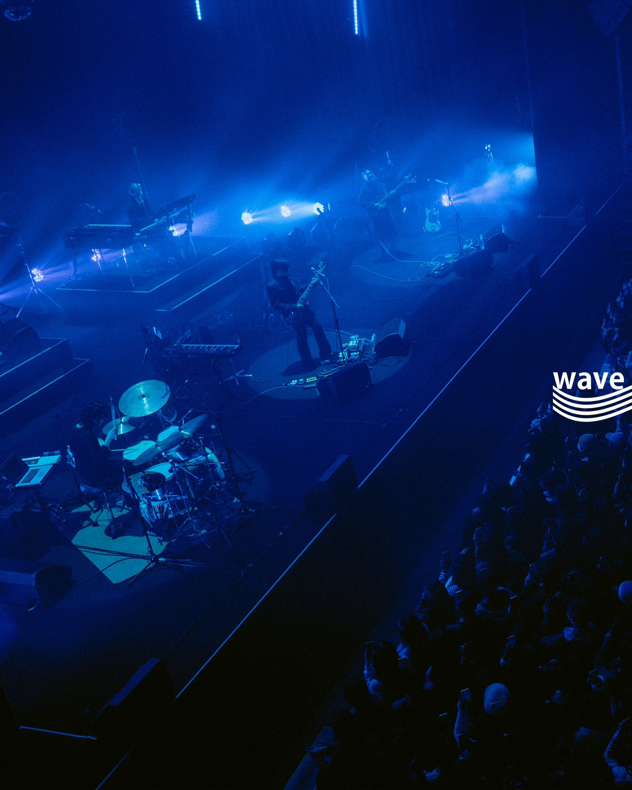
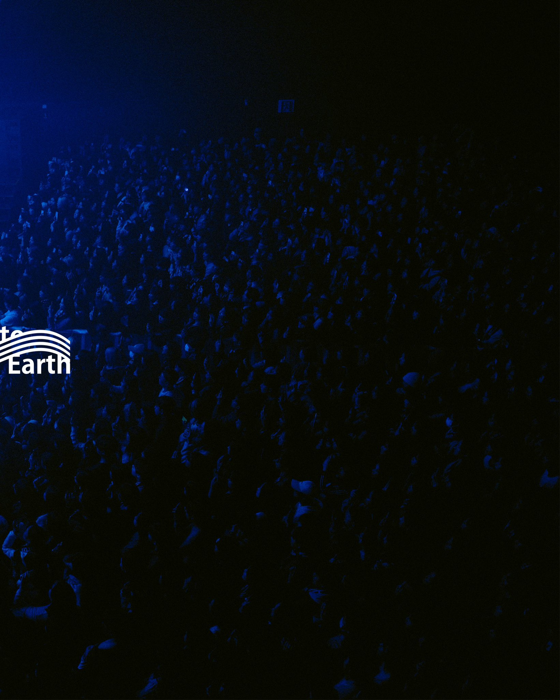
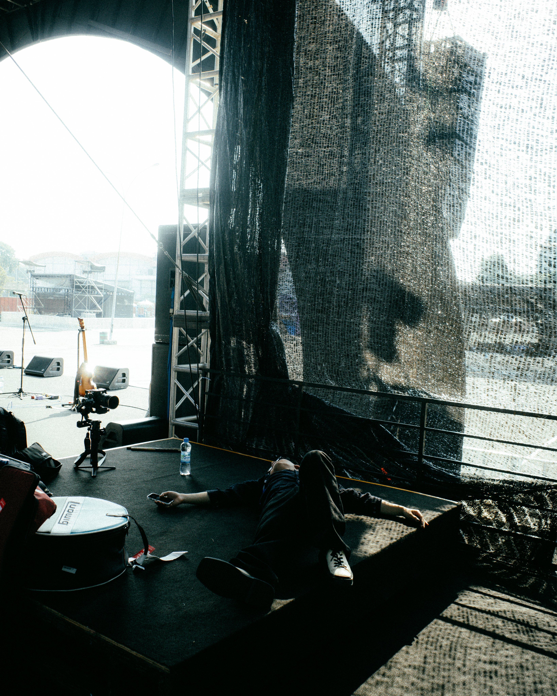
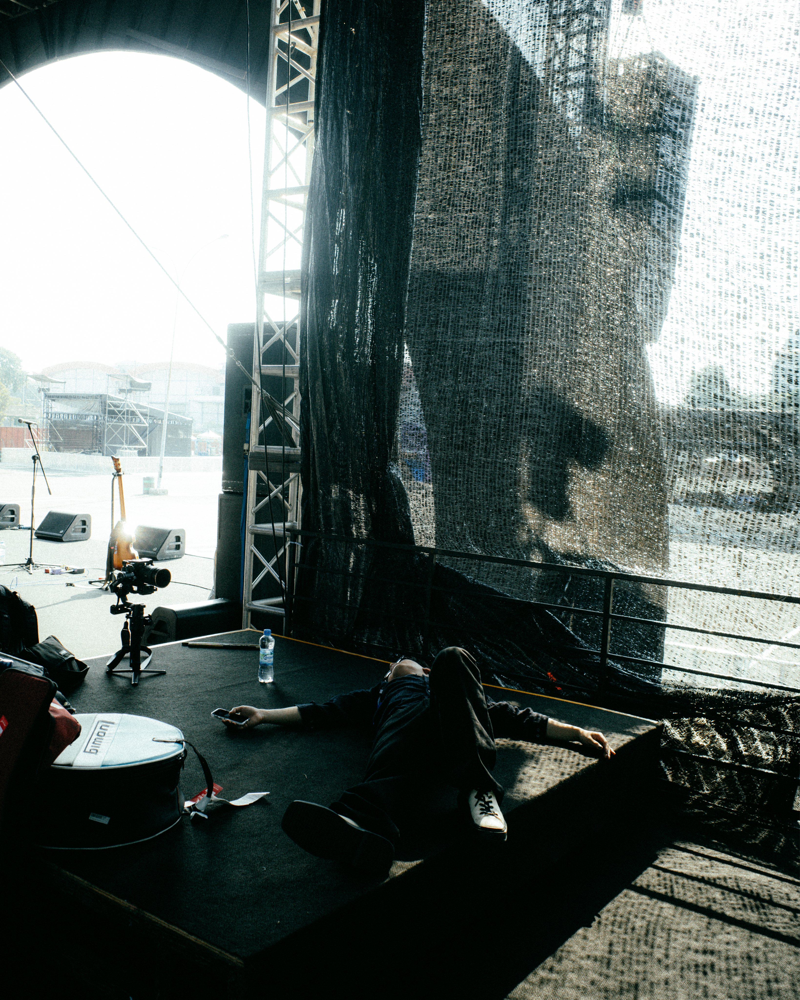
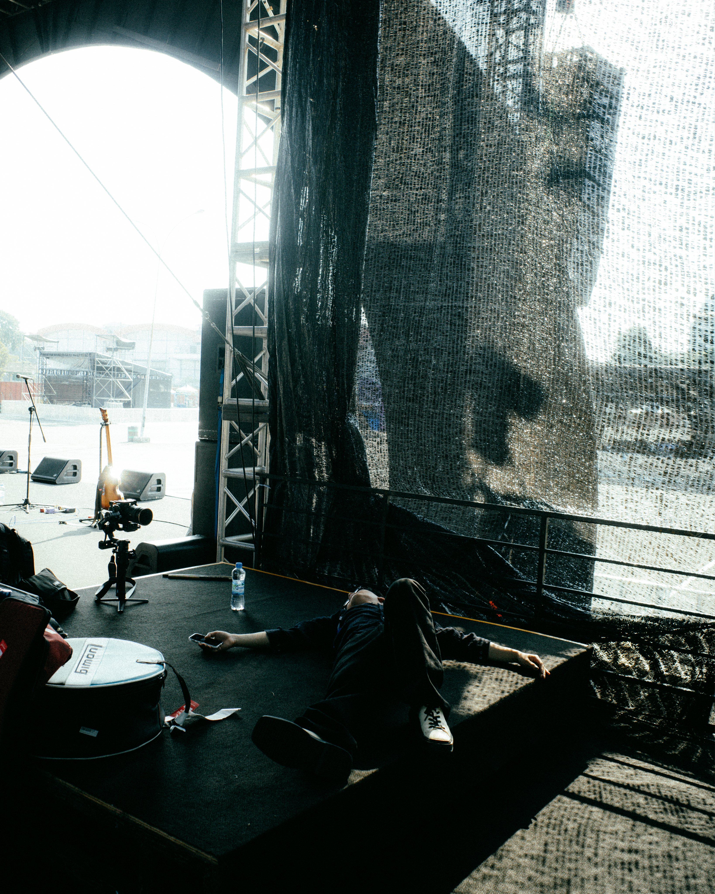
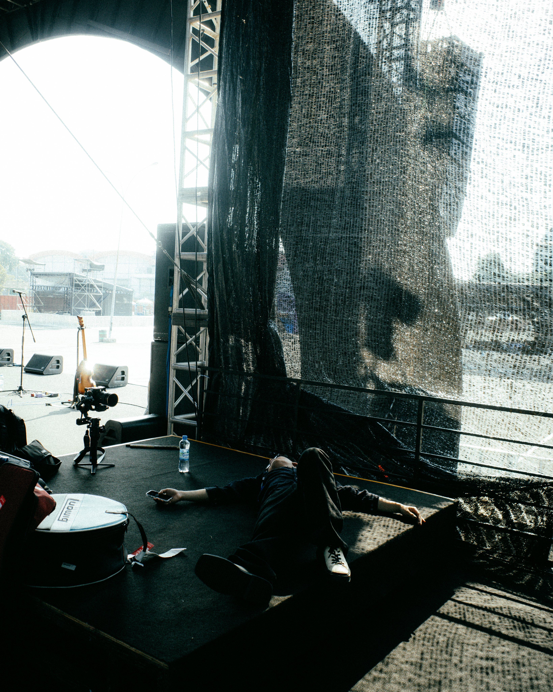

They also love taking pictures :D


 


Wave to Earth is a South Korean Indie Rock band. The band consists of Kim Daniel, Shin Donggyu and Cha Soonjong.
Daniel Kim (김다니엘), the Guitar, Vocal and Songwriter. Borned in France on March 18, 1997. He moved to South Korea when he was younger. He is currently studying at Howon University's Department of Applied Music, majoring in singer-songwriting. Before Wave to Eerth, he was in a band called The Poles, another band under POCLANOS, and he's the front person of the band. Then, in middle school, him and Shin Dongkyu(Q) formed the band, Wave to Earth. He composes and writes all of Wave to Earth's songs and from time to time, he would work as their own stylist.
John Cha (차순종), the Bass player of the band. Borned in South Korea on August 13, 1997. He used to live in Kenya for 7 years as a child, that's where he got his name 'John' from. Unlike Kim, John has graduated from the Seoul Institute of the Arts with a major in Applied Music and Bass. Amongst the group,he's the best with English because he went to an American missionary school. Fun fact about him, he loves indian food but dislikes green tea. He also would like people to know that when dressing up, he would wear tops, pants, socks, glasses, and shoes in that order.
Dong Q (신동규), the Drum player of the band. Born in Seoul, South Korea on January 23, 1998. Along with Kim, he is also currently studying in Howon University's Department of Applied Music. Before Wave to Earth, he's a former member of the jazz group, AFIF. Fun facts about him, he has a small dog named Jelmi! He really likes fashion and gets inspiration from Pinterest, he would like to be a model. Everytime the 3 of them are recording, he's always filming~
